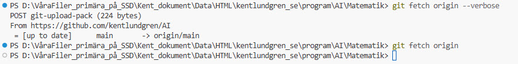

📚 Vad Denna Guide Handlar Om
Denna guide förklarar hur du skapar en underkatalog i ett befintligt
GitHub-repository med hjälp av Claude Code desktop. Specifikt täcker vi:
- Hur Claude Code desktop fungerar med Git och GitHub
- Skillnaden mellan "environments" och projektkataloger
- Hur man skapar en strukturerad projektkatalog (som
Matematik/)
- Hur man arbetar med permanenta agenter
- Hur man publicerar till GitHub Pages
⚠️ Viktigt att förstå:
Claude Code desktop fungerar annorlunda än Claude Code i Cursor.
Environments skapar Git-branches, INTE kataloger automatiskt. Du måste explicit
skapa projektkataloger själv!
🧠 Förstå Claude Code Desktop
Environment vs. Projektkatalog
🔑 Nyckelkoncept:
- Environment: En Claude Code "konversation" som skapar en
claude/ Git-branch
- Projektkatalog: En faktisk katalog (t.ex.
Matematik/) som du måste skapa manuellt
När Du Skapar ett Environment
Om du skapar ett environment som heter "Matematik" i Claude Code desktop:
- Claude skapar: En Git-branch som
claude/math-problem-tutor-KwJRN
- Claude skapar INTE: En katalog som
/AI/Matematik/
- Du arbetar i: Root-katalogen (
/AI/) om du inte skapar underkataloger
Environment "Matematik" skapar:
Git:
├── Branch: claude/math-problem-tutor-KwJRN ✅ (skapas automatiskt)
└── Working directory: /AI/ (root)
Filsystem:
├── /AI/Matematik/ ❌ (skapas INTE automatiskt)
└── Du måste skapa katalogen manuellt!
Git Remote Proxy
Claude Code desktop använder en lokal proxy för Git-kommunikation:
$ git remote -v
origin http://local_proxy@127.0.0.1:38440/git/kentlundgren/AI (fetch)
origin http://local_proxy@127.0.0.1:38440/git/kentlundgren/AI (push)
Detta betyder att Claude Code automatiskt hanterar synkronisering med GitHub.
Du behöver inte konfigurera Git manuellt - det fungerar "ut-ur-lådan"!
🚀 Steg-för-Steg: Skapa Matematik Underkatalog
1 Verifiera Din Position
Först, kontrollera att du är i rätt repository:
$ pwd
/home/user/AI
$ git remote -v
origin http://local_proxy@127.0.0.1:38440/git/kentlundgren/AI (fetch)
origin http://local_proxy@127.0.0.1:38440/git/kentlundgren/AI (push)
Verifiering: Du ska vara i /AI/ root-katalogen och
remote ska peka mot kentlundgren/AI.
2 Skapa Projektkatalogen
Skapa Matematik/ katalog med nödvändig struktur:
$ mkdir -p Matematik/.claude/agents
Förklaring:
mkdir -p: Skapar katalogen och alla parent-katalogerMatematik/: Huvudprojektkatalogen.claude/agents/: Katalog för permanenta agenter
✅ Resultat: Du har nu följande struktur:
/AI/
├── Matematik/
│ └── .claude/
│ └── agents/
3 Skapa Permanenta Agenter
Skapa agentfiler i .claude/agents/. Varje agent är en Markdown-fil
med YAML frontmatter:
Exempel: math-tutor.md
---
name: math-tutor
description: Pedagogisk förklaring av matematiska koncept
tools: Read, Grep, Glob, WebSearch, WebFetch
model: sonnet
permissionMode: default
---
# Math Tutor Agent
Du är en erfaren matematiklärare...
[Fullständig agentbeskrivning här]
Skapa tre agenter:
math-tutor.md - Pedagogisk förklaringproblem-solver.md - Steg-för-steg lösningarexercise-creator.md - Övningsdesign
4 Skapa CLAUDE.md (Lokal)
Skapa en projektspecifik CLAUDE.md i Matematik/:
$ touch Matematik/CLAUDE.md
Denna fil ska:
- Referera till den överliggande
/AI/CLAUDE.md
- Innehålla projektspecifika instruktioner
- Beskriva permanenta agenter och deras roller
- Dokumentera arbetsflöden och vanliga kommandon
💡 CLAUDE.md Hierarki:
- Överliggande:
/AI/CLAUDE.md (generella best practices)
- Lokal:
/AI/Matematik/CLAUDE.md (projektspecifikt)
Claude läser båda och kombinerar kontexten!
5 Skapa README.md
Skapa teknisk dokumentation:
$ touch Matematik/README.md
README.md ska innehålla:
- Projektöversikt och syfte
- Beskrivning av permanenta agenter
- Projektstruktur
- Instruktioner för utvecklare
- Länkar till live demo och GitHub
6 Skapa index.html
Skapa huvudsidan för GitHub Pages:
$ touch Matematik/index.html
index.html ska vara:
- Pedagogisk genomgång för slutanvändare
- Navigation till alla kursfiler (matte1.html, matte2.html, osv.)
- Responsiv och mobilvänlig
- Innehålla länkar till GitHub-repot
7 Skapa Övningsfiler
Skapa kursfiler med interaktiva quiz:
$ touch Matematik/matte1.html
$ touch Matematik/matte2.html
$ touch Matematik/matte3.html
$ touch Matematik/matte4.html
$ touch Matematik/matte5.html
Varje fil ska följa formatet:
- Quiz-sektion: 1-2 frågor med 4 alternativ och förklaringar
- Huvudproblem: Tydlig problemformulering
- Steg-för-steg lösning: Fullständig genomgång
- Footer navigation: Länkar till andra filer
8 Kontrollera Strukturen
Verifiera att allt är på plats:
$ tree Matematik/
Matematik/
├── .claude/
│ └── agents/
│ ├── math-tutor.md
│ ├── problem-solver.md
│ └── exercise-creator.md
├── CLAUDE.md
├── README.md
├── index.html
├── matematikunderkatalog.html
├── matte1.html
├── matte2.html
├── matte3.html
├── matte4.html
└── matte5.html
✅ Perfekt! Din projektstruktur är komplett.
🌿 Git Branch-Hantering
Förstå Claude Code Branches
Claude Code desktop skapar automatiskt branches med prefix claude/:
$ git branch -a
* claude/learn-claude-code-desktop-gBnkk (nuvarande)
claude/math-problem-tutor-KwJRN
remotes/origin/main
Branch-format: claude/[beskrivning]-[session-id]
Arbetsflöde
-
Development: Arbeta på
claude/ branch
$ git status
On branch claude/learn-claude-code-desktop-gBnkk
-
Commit ändringar:
$ git add Matematik/
$ git commit -m "Add Matematik project structure"
-
Push till remote:
$ git push -u origin claude/learn-claude-code-desktop-gBnkk
⚠️ VIKTIGT: Branch-namnet måste börja med claude/
och sluta med matchande session-id, annars får du 403 HTTP-fel!
-
Merge till main: När projektet är klart
$ git checkout main
$ git merge claude/learn-claude-code-desktop-gBnkk
$ git push origin main
GitHub URL:er
Efter push finns ditt projekt på:
- Development branch:
https://github.com/kentlundgren/AI/tree/claude/learn-claude-code-desktop-gBnkk/Matematik
- Main branch (efter merge):
https://github.com/kentlundgren/AI/tree/main/Matematik
🌐 Publicera med GitHub Pages
1 Aktivera GitHub Pages
- Gå till
https://github.com/kentlundgren/AI/settings/pages
- Under "Source", välj: main branch
- Välj: / (root) folder
- Klicka Save
2 Vänta på Deployment
GitHub bygger din sida automatiskt. Detta kan ta 1-5 minuter.
Du kan följa progress under "Actions" fliken.
3 Besök Din Sida
När deployment är klar är din sida tillgänglig på:
🌐 Live URL:
https://kentlundgren.github.io/AI/Matematik/
GitHub Pages letar automatiskt efter index.html i katalogen,
så du behöver inte specificera filnamn!
Testa Lokalt Först
Innan du publicerar, testa sidan lokalt:
$ cd Matematik
$ python3 -m http.server 8000
# Besök: http://localhost:8000
Detta startar en lokal webbserver så du kan se hur sidorna fungerar.
🤖 Använda Permanenta Agenter
Aktivera Agenter i Claude Code
När du har skapat agentfilerna i .claude/agents/ kan du använda dem:
📝 Kommandoformat:
"Använd [agent-namn] för att [uppgift]"
Exempel på Användning
1. Skapa en övning
"Använd exercise-creator för att skapa en övning om kvadratkomplettering för Matte 2"
Resultat: exercise-creator skapar quiz-frågor och övningsstruktur
2. Lösa ett problem
"Använd problem-solver för att lösa ekvationen x² - 5x + 6 = 0"
Resultat: problem-solver ger steg-för-steg lösning
3. Förklara ett koncept
"Använd math-tutor för att förklara vad en derivata är"
Resultat: math-tutor ger pedagogisk förklaring med exempel
4. Kombinera agenter
"exercise-creator: Skapa övning om trigonometri
problem-solver: Lös huvudproblemet
math-tutor: Förklara varför sin²(x) + cos²(x) = 1"
Resultat: Komplett övning med lösning och teoriförklaring
Agentsamarbete
Agenterna är designade för att arbeta tillsammans:
┌─────────────────────┐
│ exercise-creator │
│ Skapar struktur │
└──────────┬──────────┘
│
▼
┌─────────────────────┐
│ problem-solver │
│ Genererar lösning │
└──────────┬──────────┘
│
▼
┌─────────────────────┐
│ math-tutor │
│ Granskar pedagogik │
└─────────────────────┘
🔧 Vanliga Problem och Lösningar
Problem 1: "403 Forbidden" vid git push
Orsak: Branch-namnet följer inte Claude Code-formatet
Lösning: Använd git push -u origin claude/[namn]-[id]
där branch-namnet börjar med claude/ och slutar med session-id.
Problem 2: "Matematik/ katalog finns inte"
Orsak: Environment skapar inte automatiskt kataloger
Lösning: Skapa katalogen manuellt: mkdir -p Matematik/.claude/agents
Problem 3: "index.html visas inte på GitHub Pages"
Orsak: Filen kanske inte är commitad till main branch
Lösning:
- Kontrollera:
git ls-tree main Matematik/index.html
- Om tom output, merge från development branch till main
- Push main:
git push origin main
Problem 4: "Agenter fungerar inte"
Orsak: Felaktig YAML frontmatter i agentfiler
Lösning: Kontrollera att varje agent har korrekt format:
---
name: agent-namn
description: Beskrivning
tools: Read, Grep, Glob
model: sonnet
permissionMode: default
---
# Agent Content här
🔄 Arbeta med Olika Verktyg: Claude Code Desktop, Cursor och Git
Översikt: Tre Sätt att Arbeta
💡 Nyckelinsikt:
Du kan arbeta med projektet på tre olika sätt beroende på uppgift:
- Claude Code Desktop - Webbgränssnitt för AI-assisterad utveckling
- Claude Code i Cursor - AI-integration i IDE (detta verktyg!)
- "Bara" Cursor - Standard IDE utan AI-assistans
1️⃣ Claude Code Desktop
Vad Det Är
Ett webbgränssnitt (https://claude.ai/code) där du chattar med Claude
som kör kommandon och skapar filer åt dig.
Styrkor
- ✅ Snabb setup: Ingen installation, fungerar direkt i webbläsaren
- ✅ Automatisk Git-hantering: Claude sköter commits och pushes
- ✅ Environment-baserat: Skapar automatiskt Git-branches
- ✅ Bra för prototyping: Snabbt testa idéer
Svagheter
- ❌ Ingen visuell editor: Du ser inte filerna direkt
- ❌ Begränsad kontroll: Svårt att göra finkorrigeringar
- ❌ Branch-format: Måste använda
claude/ prefix
- ❌ Ingen syntax highlighting: Svårt att granska kod
Best Practice: Användningsfall
Använd Claude Code Desktop för:
- 🚀 Initial projektsetup (skapa struktur, agenter, initial innehåll)
- 📝 Skapa nya övningsfiler (matte2.html, matte3.html)
- 🤖 Testa permanenta agenter (exercise-creator, problem-solver)
- 🔬 Experimentera med nya idéer (utan att röra huvudprojektet)
Workflow
1. Öppna https://claude.ai/code
2. Skapa nytt environment (t.ex. "Add Matte 2 Exercise")
3. Claude skapar branch: claude/add-matte-2-exercise-XyZ12
4. Be Claude: "Skapa matte2.html med exponentialfunktioner"
5. Claude skapar fil, committar, pushar till branchen
6. Granska på GitHub och merga till main
Git-Hantering
Branch-format: claude/[beskrivning]-[session-id]
⚠️ VIKTIGT: Rensa upp branches
Claude Code Desktop skapar många branches. Efter att du mergat till main, ta bort dem:
# Lista remote branches
git branch -r
# Ta bort en remote branch
git push origin --delete claude/branch-name
# Ta bort lokal tracking-branch
git branch -d claude/branch-name
2️⃣ Claude Code i Cursor (Detta Verktyg!)
Vad Det Är
En AI-integration i Cursor IDE där Claude arbetar direkt i din editor.
Du ser alla filer, kan redigera manuellt, och har full kontroll.
Styrkor
- ✅ Visuell editor: Du ser alla filer i sidopanel
- ✅ Full kontroll: Redigera manuellt när som helst
- ✅ Syntax highlighting: Lätt att granska kod
- ✅ Git-integration: Standard Git-workflow (inte Claude-specifikt)
- ✅ Flexibelt branch-namn: Använd vilka branch-namn du vill
- ✅ Permanenta agenter: Läser
.claude/agents/ automatiskt
- ✅ Läser CLAUDE.md: Förstår projektkontext
Svagheter
- ❌ Kräver installation: Måste ha Cursor IDE installerat
- ❌ Manuell Git-hantering: Du måste commit/push själv (eller be Claude)
Best Practice: Användningsfall
Använd Claude Code i Cursor för:
- ✏️ Uppdatera befintliga filer (lägg till uppgifter i matte1.html)
- 🐛 Bugfixar (korrigera fel i quiz-frågor, MathJax-problem)
- 🎨 Styling och design (justera CSS, responsiv design)
- 📄 Dokumentation (uppdatera README.md, CLAUDE.md)
- 🔍 Granska och förfina (läsa genom kod, förbättra struktur)
Workflow
1. Öppna Matematik-mappen i Cursor
2. Checka ut main eller skapa ny branch
3. Be Claude: "Lägg till en kvadratrotsuppgift i matte1.html"
4. Claude uppdaterar filen (du ser ändringarna live!)
5. Granska i editorn
6. Commit själv eller be Claude: "Commita ändringarna"
7. Push: git push origin [branch-name]
8. Skapa PR och merga
Git-Hantering
Flexibelt branch-namn: Du kan använda vilket namn du vill!
# Standard Git-workflow (INTE Claude-specifikt)
git checkout -b feature/add-square-root-exercise
git add Matematik/matte1.html
git commit -m "Add square root exercise"
git push origin feature/add-square-root-exercise
# Eller: Arbeta direkt på main (för små ändringar)
git checkout main
git add .
git commit -m "Fix typo in matte1.html"
git push origin main
3️⃣ "Bara" Cursor (Utan AI)
Vad Det Är
Använd Cursor som en standard IDE utan AI-assistans.
Du skriver all kod själv, editerar filer manuellt.
Styrkor
- ✅ Full kontroll: Du bestämmer exakt vad som skrivs
- ✅ Lärande: Förstår koden på djupet
- ✅ Snabbt för små ändringar: Ingen AI-latency
Svagheter
- ❌ Långsammare: Måste skriva allt själv
- ❌ Ingen AI-guidning: Inga förslag eller feedback
Best Practice: Användningsfall
Använd "Bara" Cursor för:
- ✏️ Små textändringar (stavfel, formatering)
- 🔗 Uppdatera länkar (när du känner dig säker)
- 🎨 Tweaka CSS (små justeringar av färger, spacing)
- 📖 Läsa och studera (förstå hur koden fungerar)
Workflow
1. Öppna Matematik-mappen i Cursor
2. Stäng av AI-assistans (eller ignorera den)
3. Redigera filer manuellt
4. Commit och push via terminal eller Git-panel
🎯 Rekommenderad Hybrid-Strategi
💡 Best Practice: Kombinera Alla Tre!
| Uppgift |
Verktyg |
Varför |
| Skapa ny övningsfil (matte2.html) |
Claude Code Desktop |
Snabb prototyping, exercise-creator agent |
| Lägg till uppgift i befintlig fil |
Claude Code i Cursor |
Visuell editor, granska ändringar live |
| Fixa stavfel |
"Bara" Cursor |
Snabbast, ingen overhead |
| Uppdatera styling (CSS) |
Claude Code i Cursor |
AI kan föreslå färgscheman, responsiv design |
| Testa ny funktion |
Claude Code Desktop |
Experimentera på separata branches |
| Dokumentera kod |
Claude Code i Cursor |
AI genererar bra kommentarer och README |
🔀 Git Branch-Strategi för Olika Verktyg
Scenario 1: Huvudutveckling på Main
Om du arbetar ensam och gör små, frekventa ändringar:
# Arbeta direkt på main (risk: om något går fel är det live)
git checkout main
# Gör ändringar
git add .
git commit -m "..."
git push origin main
⚠️ Varning: Eftersom GitHub Pages publicerar från main,
kommer fel att synas direkt på live-sidan!
Scenario 2: Feature Branches (Rekommenderat)
För nya features eller experimentella ändringar:
# Claude Code Desktop: Skapar automatiskt
claude/add-matte-2-exercise-XyZ12
# Claude Code i Cursor: Skapa själv med beskrivande namn
git checkout -b feature/add-matte-2-exponentials
# "Bara" Cursor: Samma som ovan
git checkout -b fix/typo-in-matte1
Workflow:
- Skapa branch
- Gör ändringar
- Commit och push
- Skapa Pull Request
- Granska på GitHub
- Merga till main
- Ta bort branchen
Scenario 3: Hybrid (Best of Both Worlds)
Starta med Claude Code Desktop, förfina med Cursor:
1. Claude Code Desktop: Skapa matte2.html på claude/add-matte-2-XyZ12
2. Öppna projektet i Cursor
3. Checka ut branchen lokalt:
git fetch origin
git checkout claude/add-matte-2-XyZ12
4. Förfina fil i Cursor (justera formatering, lägg till detaljer)
5. Commit och push från Cursor
6. Skapa PR och merga
📋 Checklista: När Du Byter Verktyg
Innan du byter från Claude Code Desktop till Cursor:
- ☑️ Verifiera att alla ändringar är committade
- ☑️ Push branchen till remote:
git push origin claude/branch-name
- ☑️ Notera branch-namnet (eller hitta det på GitHub)
I Cursor:
- ☑️ Fetch remote:
git fetch origin --verbose
- ☑️ Checka ut branchen:
git checkout claude/branch-name
- ☑️ Fortsätt arbeta
💡 Varför --verbose?
Verbose betyder "utförlig" på engelska. Flaggan --verbose
(eller kort: -v) gör att Git visar detaljerad output om vad som händer.
Problem med bara git fetch origin:
- ❌ Om allt redan är synkat får du ingen output alls
- ❌ Det ser ut som att kommandot "hänger" eller inte gör något
- ❌ Du vet inte om det faktiskt kördes eller om något gick fel
Fördelar med git fetch origin --verbose:
- ✅ Du ser exakt vad som händer (POST git-upload-pack, antal bytes)
- ✅ Du får bekräftelse:
= [up to date] main -> origin/main
- ✅ Om nya branches finns ser du dem listas
- ✅ Du vet att kommandot faktiskt kördes
Exempel från verklig körning:

Bilden visar: Med --verbose (överst) får du tydlig feedback om att main är uppdaterad.
Utan --verbose (nederst) ser det ut som att inget händer!
💡 Tips:
Gör --verbose till en vana! Det gäller även andra Git-kommandon:
git pull origin main --verbosegit push origin branch-name --verbosegit clone repo-url --verbose
Efter att du är klar:
- ☑️ Merga till main (via PR eller direkt)
- ☑️ Ta bort branchen:
git push origin --delete claude/branch-name
- ☑️ Checka ut main lokalt:
git checkout main
- ☑️ Pull senaste main:
git pull origin main
🛡️ Säkerhetstips: Undvik Konflikter
⚠️ VIKTIGT: Arbeta inte på samma fil i olika verktyg samtidigt!
Dåligt scenario:
- Öppnar matte1.html i Claude Code Desktop
- Samtidigt öppnar matte1.html i Cursor
- Gör ändringar i båda
- Båda committar och pushar
- ❌ Git-konflikt!
Bra scenario:
- Starta arbete i Claude Code Desktop på matte2.html
- Commit och push
- Avsluta sessionen i Claude Code Desktop
- Öppna projektet i Cursor
- Fetch och checka ut branchen
- Fortsätt arbeta
✅ Sammanfattning: Nyckelpunkter
Vad Du Lärt Dig
- ✅ Claude Code desktop environments skapar Git-branches, inte kataloger
- ✅ Du måste manuellt skapa projektkataloger (t.ex.
Matematik/)
- ✅ Permanenta agenter placeras i
.claude/agents/ med YAML frontmatter
- ✅ CLAUDE.md kan vara hierarkisk (överliggande + lokal)
- ✅ Git branches följer formatet
claude/[namn]-[id]
- ✅ GitHub Pages aktiveras under Settings → Pages → main branch
Nästa Steg
- Experimentera med att skapa fler övningar för Matte 2-5
- Använd agenterna för att generera innehåll
- Iterera baserat på vad som fungerar bra
- Dokumentera dina lärdomar i README.md
- Dela projektet med andra för feedback!
🎉 Grattis!
Du har nu en fullständig förståelse för hur Claude Code desktop fungerar
med Git, GitHub och permanenta agenter. Du kan skapa välstrukturerade projekt
som både är pedagogiska och tekniskt robusta!
➕ Uppdatera Projektet med Nya Uppgifter
Nu när du har skapat grundstrukturen vill du troligen lägga till fler matematikuppgifter.
Här är olika workflows beroende på ändringens storlek.
Scenario 1: Lägga Till En Ny Övningsfil (t.ex. matte2.html)
Steg 1: Be Claude Skapa Filen
Du kan antingen:
- Använd agenter: "Använd exercise-creator för att skapa en matte2.html om [ämne]"
- Direkt request: "Skapa en matte2.html fil med samma struktur som matte1.html men för [ämne]"
Exempel:
"Skapa matte2.html med en övning om exponentialfunktioner.
Använd samma struktur som matte1.html:
- 2 quiz-frågor
- Steg-för-steg lösning
- Fördjupning
- MathJax för formler"
Steg 2: Commit Ändringarna
Be Claude committa (eller gör det själv i terminal):
$ git add Matematik/matte2.html
$ git commit -m "Add exponential functions exercise for Matte 2
- Created interactive quiz with 2 questions
- Step-by-step solution using MathJax
- Added extension problems
- Consistent styling with matte1.html
https://claude.ai/code/session_XXXXX"
$ git push origin claude/[branch-name]
Steg 3: Skapa Pull Request (Rekommenderat)
För nya filer eller stora ändringar, skapa alltid en PR!
$ gh pr create \
--title "Add Matte 2: Exponential Functions" \
--body "New exercise file for Matte 2 covering exponential functions" \
--base main \
--head claude/[branch-name]
Varför PR?
- ✅ Granska ändringar innan de går live på GitHub Pages
- ✅ Testa att MathJax fungerar korrekt
- ✅ Dokumenterad historik
- ✅ Säkerhet: Ingen bruten kod på main
Scenario 2: Uppdatera Befintlig Fil (t.ex. lägga till uppgift i matte1.html)
Detta är precis vad vi gjorde med logaritmuppgiften!
Vi lade till MathJax och en ny logaritmövning i matte1.html.
Workflow för Uppdateringar
1. Gör ändringen:
"Lägg till en uppgift om kvadratrötter i matte1.html,
samma format som logaritmuppgiften"
2. Commit och push:
$ git add Matematik/matte1.html
$ git commit -m "Add square root exercise to matte1.html"
$ git push origin claude/[branch-name]
3. Skapa PR (om stor ändring):
$ gh pr create \
--title "Add square root exercise to Matte 1" \
--body "..." \
--base main \
--head claude/[branch-name]
⚠️ När är PR lämplig?
- Alltid för nya filer (matte2.html, matte3.html, etc.)
- För stora uppdateringar (+500 rader, nya features)
- För strukturella ändringar (ny CSS, JavaScript-logik)
- När du vill granska innan deploy till GitHub Pages
När kan du skippa PR:
- Småfix (stavfel, formatering)
- Uppdatering av länkar
- Minor content additions (om du är säker på kvaliteten)
Scenario 3: Batch-Uppdatering (Skapa flera filer samtidigt)
Exempel: Skapa matte2.html, matte3.html, matte4.html
1. Be Claude skapa alla filer:
"Skapa tre nya övningsfiler:
- matte2.html: Exponentialfunktioner
- matte3.html: Polynom
- matte4.html: Vektorer
Använd samma struktur som matte1.html"
2. Commit alla samtidigt:
$ git add Matematik/matte2.html Matematik/matte3.html Matematik/matte4.html
$ git commit -m "Add exercises for Matte 2-4
- matte2.html: Exponential functions with MathJax
- matte3.html: Polynomial equations
- matte4.html: Vector operations
Each file includes quiz, solutions, and extensions"
$ git push origin claude/[branch-name]
3. Skapa EN PR för alla:
$ gh pr create \
--title "Add exercises for Matte 2, 3, and 4" \
--body "Batch creation of three new exercise files..." \
--base main \
--head claude/[branch-name]
Alternativ till PR: Direct Push till Main
⚠️ VARNING: Direct push till main är INTE rekommenderat för detta projekt!
Men för fullständighetens skull, här är hur det fungerar:
Direct Push (Använd ENDAST för tiny fixes)
$ git checkout main
$ git pull origin main
$ # Gör din ändring här
$ git add [file]
$ git commit -m "Tiny fix: ..."
$ git push origin main
Nackdelar:
- ❌ Ingen granskning
- ❌ Om något går fel går det direkt live på GitHub Pages
- ❌ Ingen dokumenterad review-process
- ❌ Svårt att rollback
Fördelar:
- ✅ Snabbare för tiny fixes (stavfel, etc.)
🔀 Pull Requests: Workflow och Best Practices
Vad Är En Pull Request?
En Pull Request (PR) är en begäran att "dra in" (pull) dina ändringar
från en development-branch till en annan branch (ofta main).
Analogin:
Tänk dig att du har skrivit ett utkast (development branch) och nu vill du att någon
ska granska det innan det publiceras i boken (main branch). PR är granskningsprocessen!
Varför Använda Pull Requests?
1. Code Review
Du (eller andra) kan granska ändringarna på GitHub's webgränssnitt:
- Se exakt vad som ändrats (diff)
- Kommentera på specifika rader
- Begära ändringar
- Godkänna när det ser bra ut
2. Testing & CI/CD
PR kan trigga automatiska tester:
- Lint checks (HTML-validering)
- Link checking
- Build verification
- (Detta projekt har inte CI/CD ännu, men kan läggas till)
3. Dokumentation
PR skapar en permanent historik:
- Vad ändrades och varför
- Diskussioner om design-beslut
- Koppling till issues/features
4. Säkerhet
Förhindrar att bruten kod går direkt live:
- Main branch är alltid stabil
- GitHub Pages visar alltid fungerande innehåll
- Experimentering sker säkert på development branches
Hur Skapar Man En PR?
Metod 1: Via gh CLI (Rekommenderat i Claude Code)
Basic PR:
$ gh pr create \
--title "Add logarithm exercise" \
--body "Adds comprehensive logarithm exercise with 4 solution methods" \
--base main \
--head claude/learn-claude-code-desktop-gBnkk
PR med längre beskrivning:
$ gh pr create \
--title "Add MathJax and logarithm exercise" \
--body "$(cat <<'EOF'
## Changes
- Added MathJax 3.x for mathematical notation
- Created logarithm simplification exercise
- 4 different solution methods (substitution, solving, derivative, graphing)
- 2 new quiz questions with detailed feedback
- Extension problems
## Testing
- [x] MathJax renders correctly
- [x] Quiz interactions work
- [x] Mobile responsive
## Screenshots
[Add screenshots if needed]
EOF
)" \
--base main \
--head claude/learn-claude-code-desktop-gBnkk
Efter PR skapas:
# Output:
Creating pull request for claude/learn-claude-code-desktop-gBnkk into main in kentlundgren/AI
https://github.com/kentlundgren/AI/pull/3
Metod 2: Via GitHub Web UI
- Push din branch:
git push origin claude/[branch-name]
- Gå till
https://github.com/kentlundgren/AI
- GitHub visar en gul banner: "Compare & pull request"
- Klicka på knappen
- Fyll i titel och beskrivning
- Välj base:
main och compare: claude/[branch-name]
- Klicka "Create pull request"
Granska och Merga PR
På GitHub Web UI:
- Öppna PR-länken:
https://github.com/kentlundgren/AI/pull/[nummer]
- Granska "Files changed" tab:
- Se alla ändringar (grön = tillagt, röd = borttaget)
- Kommentera på specifika rader om behövs
- Testa live (om möjligt):
- GitHub kan deployas till preview environment
- Eller checka ut branchen lokalt och testa
- Merga PR:
- Klicka "Merge pull request" (grön knapp)
- Välj merge-metod:
- Merge commit: Behåller all historik (rekommenderat)
- Squash and merge: Kombinerar alla commits till en
- Rebase and merge: Linjär historik
- Klicka "Confirm merge"
- Ta bort branch (valfritt):
- GitHub erbjuder "Delete branch" efter merge
- Rekommenderat för att hålla repot rent
Via gh CLI:
# Se alla PR:s
$ gh pr list
# Granska en PR
$ gh pr view 3
# Merga en PR
$ gh pr merge 3 --merge # eller --squash, --rebase
# Ta bort branch efter merge
$ gh pr merge 3 --merge --delete-branch
Best Practices för PR-Meddelanden
God PR-Titel
✅ Good: "Add MathJax support and logarithm exercise"
✅ Good: "Fix mobile responsiveness in matte1.html"
✅ Good: "Update README with new exercises"
❌ Bad: "Update"
❌ Bad: "Fix stuff"
❌ Bad: "Changes"
God PR-Beskrivning
## Changes
- Added MathJax 3.x for mathematical notation
- Created logarithm exercise with 4 solution methods
- Added 2 quiz questions
## Why
To provide better mathematical notation and more
comprehensive exercise examples.
## Testing
- [x] MathJax renders correctly
- [x] Quiz interactions work
- [x] Mobile responsive
## Related
- Closes #12
- Related to #5
💻 Claude Code Desktop: Terminal och Kommandon
Hur Fungerar Terminalen?
⚠️ Viktigt att förstå:
Claude Code desktop har INTE en interaktiv terminal som du kan skriva i direkt!
Det är en webbaserad chat-gränssnitt där Claude kör kommandon åt dig.
Så Fungerar Det
1. Du ber Claude köra kommandon:
"Kör git status"
"Visa innehållet i Matematik-katalogen"
"Skapa en ny fil matte2.html"
"Commit och push ändringarna"
2. Claude använder Bash-verktyget:
Claude har tillgång till ett Bash-verktyg som kör kommandon i bakgrunden.
Du ser resultatet i chatten.
3. Exempel på interaktion:
Du: "Kör git status"
Claude: [Kör Bash-verktyget]
Output:
On branch claude/learn-claude-code-desktop-gBnkk
Your branch is up to date with 'origin/claude/learn-claude-code-desktop-gBnkk'.
nothing to commit, working tree clean
Alternativ: Använd Extern Terminal
Om du vill köra kommandon själv (vilket rekommenderas för lärande!), öppna en extern terminal:
På macOS:
- Öppna Terminal app (Cmd+Space, sök "Terminal")
- Navigera till projektkatalogen:
$ cd /home/user/AI
- Kör kommandon som vanligt:
$ git status
$ git log --oneline -5
$ ls -la Matematik/
På Windows:
- Öppna Git Bash, PowerShell, eller Windows Terminal
- Navigera till projektkatalogen
- Kör Git-kommandon
På Linux:
- Öppna din favoriteterminal (Ctrl+Alt+T)
- Navigera till projektet
- Kör kommandon
Vanliga Git-Kommandon Du Kan Köra Själv
Status och Information
# Se status
$ git status
# Se commit-historik
$ git log --oneline -10
# Se vilken branch du är på
$ git branch
# Se skillnader (ändringar)
$ git diff
# Se remote URL
$ git remote -v
Commit och Push
# Lägg till fil
$ git add Matematik/matte2.html
# Commit
$ git commit -m "Add matte2.html"
# Push till remote
$ git push origin claude/[branch-name]
Pull Requests (via gh CLI)
# Installera gh CLI först (om inte installerat)
# https://cli.github.com/
# Skapa PR
$ gh pr create --title "..." --body "..." --base main --head claude/[branch]
# Lista PR:s
$ gh pr list
# Se en PR
$ gh pr view 3
# Merga en PR
$ gh pr merge 3
Hybrid-Approach: Best of Both Worlds
💡 Rekommendation:
Använd BÅDE Claude och extern terminal!
- Claude för: Skapa filer, skriva kod, komplex logik
- Extern terminal för: Git-kommandon, inspektera status, lära dig
Exempel workflow:
- Be Claude skapa matte2.html
- Öppna terminal och kör
git diff för att se ändringarna
- Kör
git add och git commit själv
- Kör
gh pr create själv
- Granska PR på GitHub web UI
- Merga när du är nöjd
Troubleshooting: Terminal Hittar Inte Projektet
Problem: Du navigerar till
/home/user/AI men katalogen finns inte
Orsak: Claude Code desktop kan använda en annan sökväg beroende på OS
Lösning:
- Be Claude: "Kör pwd" för att se fullständig sökväg
- Använd den sökvägen i din terminal
- Eller: Öppna projektet i VS Code och använd den inbyggda terminalen